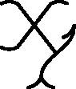

-pic
—
Typesetting Graphs and Diagrams in TeX
Xy-pic is a package for typesetting graphs and diagrams using the
principle of logical composition of visual components.
It is
structured as several modules, each defining a mnemonic plain text
notation for a particular kind of graphical object or structure.
Example objects are arrows, curves, frames, and colouring/rotation
on drivers that support it; these can be organised in matrix,
directed graph, path, polygon, knot, and 2-cell structure (a more
complete list of the features is given below).
Xy-pic works with most formats, including all variants of LaTeX,
AMS-TeX, and plain TeX, and has been used to typeset complicated
diagrams from many application areas including category theory,
automata theory, algebra, neural networks, topology (knots and
braids), database theory, chemistry, and genealogy.
Xy-pic has been designed with great care to allow the style of
pictures to match well with the exquisite quality of the surrounding
TeX typeset material.
You can get Xy-pic from
CTAN
or directly from the
SourceForge development project home,
however, chances are that Xy-pic is already included with your TeX installation
(for TeX Live, for example,
Xy-pic is part of the pictures
bundle).
Xy-pic was conceived by
Kristoffer Høgsbro Rose,
the present version is the result of several years of collaboration with
Ross Moore with
essential contributions from George Necula, Jeremy Gibbons,
Daniel Müllner,
and Alex Perlis,
and with many suggestions from more than two decades of users.
Xy-pic is © by its authors as
free software.
Features
Xy-pic is structured as a kernel
and several orthogonal modules
called options
, each defining a custom notation for a particular
kind of graphical object or structure.
These (combinable) logical composition
structures are available:
- A graph combinator mode where diagrams are specified the way they are
composed as graphs.
- A matrix-like mode where the dimensions of the drawing are computed by
aligning diagram entries in rows and columns (this is the
diagram
mode Xy-pic version 2 users are used to).
- A polygon mode where diagrams shaped as regular polygons are entered
in a simple way.
- A mode for typesetting beautiful knots and links.
- A general object-oriented
turtle graphic
drawing language for
specifying graphs with objects and connections between them in a
manner independent of orientation.
The following visual component
objects can be used:
- Positions can be given in variety of formats (extendable) including
user defined coordinates (x,y) and relative to previous positions,
objects, object edges, and points on connections.
- Objects may be circular, elliptic, or rectangular (more shapes can be
added) and adjusted in several ways.
- Large library of objects with mnemonic names.
- Objects that orient themself along a connection when placed relative
to it, e.g.,
@{|-}
is like \vdash
but thus oriented; new such objects can be defined in a convenient way.
- TeX
boxes
, i.e., text and mathematical formulae.
- Includes circle segments and optionally arbitrary elliptical,
quadratic, and cubic arcs.
- Connections are aligned between the reference points of objects but
start and end on the edges.
- Any object can be used to build a connection (using
diagonal
filling
); library objects provide common line types.
- Flexible notation for drawing arrows and general paths with
tail, stem, and head built from any object(s). Special support
for arrows that cross each other, arrows that
go by
other
entries, paired arrows (including support for 2-cells), curved
arrows, and arrows with bends. The style of arrow tips can be
configured to match several styles of symbol arrows.
- Library of frames and braces.
- Special notation for rotation, scaling, colour, and line thickness.
The correct typesetting of these features requires a backend that
supports it but even when this is not available
Xy-pic tries to approximate what is requested such that at least the
picture size is stable (and thus page breaks).
- Output can use PostScript* for drawing (several \special formats are
supported: dvips, Textures, and OzTeX - more are being added
continuously: contact Ross Moore for the current
list). Notation for inclusion of literal PostScript* is available.
- Support for Adobe PDF* output is available
from version 3.8 (thanks to support by Daniel Müllner and
font conversion software by Scott Pakin).).
Documentation
The official Xy-pic documentation, updated with each release, consists of the following four documents.
- Xy-pic User's Guide
by Kristoffer H. Rose.
Explains how to use the Xy-pic macro package to typeset
basic
matrix-like
diagrams with TeX
(pdf).
- Xy-pic Reference Manual
by Kristoffer H. Rose & Ross Moore.
Reference manual for Xy-pic summarising syntax and
drawing
semantics
of the capabilities in the kernel, all extensions and
features, and the PostScript* backend
(pdf).
- Xy-pic Complete Sources with TeXnical Commentary
by Kristoffer H. Rose & Ross Moore.
Just that (a large document, pdf).
- The xypdf package
by Daniel Müllner.
Detailed user and TeXnical documentation of the PDF* support for Xy-pic
(pdf).
In addition there are several tutorials on Xy-pic.
- An Introduction to Xy-pic
by Cameron McLeman (pdf slides).
- Commutative Diagrams with XY-pic---I. Kernel Functions and Arrows
by Paul A. Blaga (pdf).
- LaTeX/Creating Graphics/Xy-pic
is a WikiBook chapter.
- The LaTeX Graphics Companion, Second Edition
by Michel Goossens, Sebastian Rahtz, Frank Mittelbach, Denis Roegel, and Herbert Voß,
Addison-Wesley, 2007.
Chapter 7 gives a concise introduction to some advanced uses of Xy-pic
(official page;
in the first edition on Google books chapter 5 is dedicated to Xy-pic).
- Examples on Typesetting Commutative Diagrams Using Xy-pic
by M. Alsani (ps).
- Using Xy-pic in LyX
by H. Peter Gumm (pdf).
- Drawing knot pictures using LaTeX with Xy-pic – An introduction and tutorial
by Lars Fischer (html).
- Xy-pic tutorial with an archive of examples
by Aaron Lauda (html).
Uses low level Xy-pic directives for everything.
- Tutorial de Xy-pic
by Carlos A. P. Campani (pdf, in Portuguese).
Finally, we maintain a collection of
examples and
papers on CTAN.
If you know of other tutorials, interesting papers, or instructive examples, that can be shared, then please drop a note to the mailing list!
Help and Support
Help and support on Xy-pic matters, as well as announcement of new versions, etc., is provided by the Xy-pic mailing list, graciously hosted by TUG.
* PostScript and PDF are trademarks of Adobe, Inc.
Kristoffer Høgsbro Rose
—
$Id: Xy-pic.html,v 3.38 2013/10/02 02:04:28 krisrose Exp $
—
Hits by
 :
:
 .
.